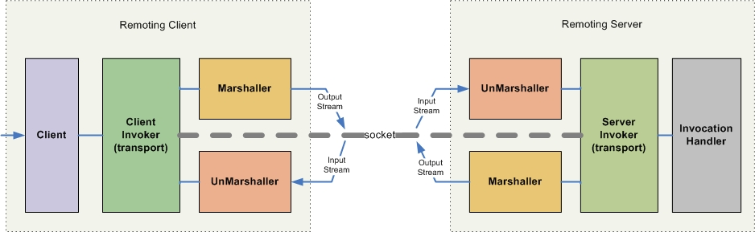

系统远程调用思想
常规远程调用协议
- dubbo
- thrift
- protocol buffer
- hessian
远程框架调用实现
调用端应用服务端暴露出来的接口，通过代理工厂创建代理对象
spring实现：通过spring的自动注入的方式，在服务容器里面生成代理对象，然后当需要使用的时候，直接使用代理对象，
就可以调用到另一个系统里面的服务
远程通讯基本原理
从底层层面去看，网络通信需要做的就是将流从一台计算机传输到另外一台计算 机，基于传输协议和网络IO来实现，
- 传输协议：主要有 tcp、udp、http等，tcp、udp、http都是在基于Socket概念上为某类应用场景而扩展出的传输协议
- 网络IO：主要有bio（阻塞）、 nio（非阻塞）、aio（异步，jdk7中新特性）三种方式，所有的分布式应用通讯都基于这个原理而实现，只是为了应用的易用，各种语言通常都会提供一些更为贴近应用易用的应用层协议
应用级协议
远程服务通讯，需要达到的目标是在一台计算机发起请求，另外一台机器在接收到请求后进行相应的处理并将结果返回给请求端，这其中又会有诸如one way request、同步请求、异步请求等等请求方式，按照网络通信原理，需要实现这个需要做的就是将请求转换成流，通过传输协议传输至远端，远端计算机在接 收到请求的流后进行处理，处理完毕后将结果转化为流，并通过传输协议返回给调用端
原理是这样的，但为了应用的方便，业界推出了很多基于此原理之上的应用级的协议，使得大家可以不用去直接操作这么底层的东西，通常应用级的远程通信协议会 提供：
- 为了避免直接做流操作这么麻烦，提供一种更加易用或贴合语言的标准传输格式
- 网络通信机制的实现，就是替你完成了将传输格式转化为流，通过某种传输协议传输至远端计算机，远端计算机在接收到流后转化为传输格式，并进行存储或以某种 方式通知远端计算机。
所以在学习应用级的远程通信协议时，可以带着这几个问题进行学习：
- 传输的标准格式是什么？
- 怎么样将请求转化为传输的流？
- 怎么接收和处理流？
- 传输协议是？
不过应用级的远程通信协议并不会在传输协议上做什么多大的改进，主要是在流操作方面，让应用层生成流和处理流的这个过程更加的贴合所使用的语言或标 准，至于传输协议则通常都是可选的
Java领域实现远程调用技术
- RMI
- XML-RPC
- Binary-RPC
- MINA
- ESB
- Burlap
- Hessian
- SOAP
- CORBA
- EJB
- JMS
RMI(Remote Method Invocation)
RMI是个典型的为java定制的远程通信协议，在single vm中，可以通过直接调用java object instance来实现通信，那么在远程通信时，如果也能按照这种方式当然是最好了，这种远程通信的机制成为RPC（Remote Procedure Call），RMI正是朝着这个目标而诞生的。
RMI 采用stubs 和 skeletons 来进行远程对象(remote object)的通讯。stub 充当远程对象的客户端代理，有着和远程对象相同的远程接口，远程对象的调用实际是通过调用该对象的客户端代理对象stub来完成的，通过该机制RMI就好比它是本地工作，采用tcp/ip协议，客户端直接调用服务端上的一些方法。优点是强类型，编译期可检查错误，缺点是只能基于JAVA语言，客户机与服务器紧耦合
RMI的实现对建立分布式Java应用程序至关重要，是Java体系非常重要的底层技术
基于RMI的一次完整的远程通信过程的原理
- 客户端发起请求，请求转交至RMI客户端的stub类；
- stub类将请求的接口、方法、参数等信息进行序列化；
- 基于socket将序列化后的流传输至服务器端；
- 服务器端接收到流后转发至相应的skelton类；
- skelton类将请求的信息反序列化后调用实际的处理类；
- 处理类处理完毕后将结果返回给skelton类；
- skelton类将结果序列化，通过socket将流传送给客户端的stub；
- stub在接收到流后反序列化，将反序列化后的Java Object返回给调用者；
基于jboss-remoting对于此过程的一个更好的图示

根据上述原理来回答下之前学习应用级协议带着的几个问题
- 传输的标准格式是什么？是Java ObjectStream。
- 怎么样将请求转化为传输的流？基于Java串行化机制将请求的java object信息转化为流。
- 怎么接收和处理流？根据采用的协议启动相应的监听端口，当有流进入后基于Java串行化机制将流进行反序列化，并根据RMI协议获取到相应的处理对象信息，进行调用并处理，处理完毕后的结果同样基于java串行化机制进行返回。
- 传输协议是？Socket。
XML-RPC
RPC使用C/S方式，采用http协议，发送请求到服务器，等待服务器返回结果。这个请求包括一个参数集和一个文本集，通常形成“classname.methodname”形式。优点是跨语言跨平台，C端、S端有更大的独立性，缺点是不支持对象，无法在编译器检查错误，只能在运行期检查。
XML-RPC也是一种和RMI类似的远程调用的协议，它和RMI的不同之处在于它以标准的xml格式来定义请求的信息(请求的对象、方法、参数等)，这样的好处是什么呢，就是在跨语言通讯的时候也可以使用。
XML-RPC协议的一次远程通信过程
-
客户端发起请求，按照XML-RPC协议将请求信息进行填充；
-
填充完毕后将xml转化为流，通过传输协议进行传输；
-
接收到在接收到流后转换为xml，按照XML-RPC协议获取请求的信息并进行处理；
-
处理完毕后将结果按照XML-RPC协议写入xml中并返回。
根据上述原理来回答下之前学习应用级协议带着的几个问题
- 传输的标准格式是？标准格式的XML。
- 怎么样将请求转化为传输的流？将XML转化为流。
- 怎么接收和处理流？通过监听的端口获取到请求的流，转化为XML，并根据协议获取请求的信息，进行处理并将结果写入XML中返回。
- 传输协议是？Http。
Binary-RPC
Binary-RPC看名字就知道和XML-RPC是差不多的了，不同之处仅在于传输的标准格式由XML转为了二进制的格式。
根据上述原理来回答下之前学习应用级协议带着的几个问题
- 传输的标准格式是？标准格式的二进制文件。
- 怎么样将请求转化为传输的流？将二进制格式文件转化为流。
- 怎么接收和处理流？通过监听的端口获取到请求的流，转化为二进制文件，根据协议获取请求的信息，进行处理并将结果写入XML中返回。
- 传输协议是？Http。
SOAP
SOAP原意为Simple Object Access Protocol，是一个用于分布式环境的、轻量级的、基于XML进行信息交换的通信协议，可以认为SOAP是XML RPC的高级版，两者的原理完全相同，都是http+XML，不同的仅在于两者定义的XML规范不同，SOAP也是Webservice采用的服务调用协议标准。
Web Service提供的服务是基于web容器的，底层使用http协议，类似一个远程的服务提供者，比如天气预报服务，对各地客户端提供天气预报，是一种请求应答的机制，是跨系统跨平台的。就是通过一个servlet，提供服务出去。
首先客户端从服务器获得WebService的WSDL，同时在客户端生成一个代理类(Proxy Class)，这个代理类负责与WebService服务器进行Request和Response。当一个数据（XML格式的）被封装成SOAP格式的数据流发送到服务器端的时候，就会生成一个进程对象并且把接收到这个Request的SOAP包进行解析，然后对事物进行处理，处理结束以后再对这个计算结果进行SOAP包装，然后把这个包作为一个Response发送给客户端的代理类(Proxy Class)，同样地，这个代理类也对这个SOAP包进行解析处理，继而进行后续操作。这就是WebService的一个运行过程。
Web Service大体上分为5个层次
- Http传输信道；
- XML的数据格式；
- SOAP封装格式；
- WSDL的描述方式；
- UDDI UDDI是一种目录服务，企业可以使用它对Webservices进行注册和搜索；
CORBA
Common Object Request Broker Architecture（公用对象请求代理[调度]程序体系结构），是一组用来定义“分布式对象系统”的标准，由OMG(Object Menagement Group)作为发起和标准制定单位。CORBA的目的是定义一套协议，符合这个协议的对象可以互相交互，不论它们是用什么样的语言写的，不论它们运行于什么样的机器和操作系统。
CORBA在我看来是个类似于SOA的体系架构，涵盖可选的远程通信协议，但其本身不能列入通信协议这里来讲，而且CORBA基本淘汰
JMS（Java Message Service）
JMS是实现java领域远程通信的一种手段和方法，基于JMS实现远程通信时和RPC是不同的，虽然可以做到RPC的效果，但因为不是从协议级别定义的，因此我们不认为JMS是个RPC协议，但它确实是个远程通信协议，在其他的语言体系中也存在着类似JMS的东西，可以统一的将这类机制称为消息机制，而消息机制呢，通常是高并发、分布式领域推荐的一种通信机制，这里的主要一个问题是容错。
JMS是Java的消息服务，JMS的客户端之间可以通过JMS服务进行异步的消息传输。JMS支持两种消息模型：Point-to-Point（P2P）和Publish/Subscribe（Pub/Sub），即点对点和发布订阅模型。
JMS中的一次远程通信的过程
-
客户端将请求转化为符合JMS规定的Message；
-
通过JMS API将Message放入JMS Queue或Topic中；
-
如为JMS Queue，则发送中相应的目标Queue中，如为Topic，则发送给订阅了此Topic的JMS Queue；
-
处理端则通过轮训JMS Queue，来获取消息，接收到消息后根据JMS协议来解析Message并处理；
根据上述原理来回答下之前学习应用级协议带着的几个问题
- 传输的标准格式是？JMS规定的Message。
- 怎么样将请求转化为传输的流？将参数信息放入Message中即可。
- 怎么接收和处理流？轮训JMS Queue来接收Message，接收到后进行处理，处理完毕后仍然是以Message的方式放入Queue中发送或Multicast。
- 传输协议是？不限。
基于JMS也是常用的实现远程异步调用的方法之一
Java领域可用于实现远程通讯的框架或library
- JBoss-Remoting
- Spring-Remoting
- Hessian
- Burlap
- XFire(Axis)
- ActiveMQ
- Mina
- Mule
- EJB3
了解这些远程通讯的框架或library时，可以带着如下问题去学习
- 是基于什么协议实现的？
- 怎么发起请求？
- 怎么将请求转化为符合协议的格式的？
- 使用什么传输协议传输？
- 响应端基于什么机制来接收请求？
- 怎么将流还原为传输格式的？
- 处理完毕后怎么回应？
JBoss-Remoting
Jboss- remoting是由jboss编写的一个java领域的远程通讯框架，基于此框架，可以很简单的实现基于多种传输协议的java对象的RPC
根据学习远程通信框架回答提出的问题
- 是基于什么协议实现的？JBoss-Remoting是个通讯框架，因此它支持多种协议方式的通信，例如纯粹的socket+io方式、rmi方式、http+io方式等。
- 怎么发起请求？在JBoss-Remoting中，只需将需要发起的请求参数对象传入jboss-remoting的InvocationRequest对象即可，也可根据协议基于InvocationRequest封装符合需求的InvocationRequest对象。
- 怎么将请求转化为符合协议的格式的？JBoss-Remoting基于Java串行化机制或JBoss自己的串行化实现来将请求转化为对象字节流。
- 用什么传输协议传输？支持多种传输协议，例如socket、http等。
- 响应端基于什么机制来接收请求？响应端只需将自己的处理对象注册到JBoss-Remoting提供的server端的Connector对象中即可。
- 怎么将流还原为传输格式的？JBoss-Remoting基于java串行化机制或jboss自己的串行化实现来将请求信息还原为java对象。
- 处理完毕后怎么回应？处理完毕后将结果对象直接返回即可，jboss-remoting会将此对象按照协议进行序列化，返回至调用端。 另外，jboss- remoting支持多种通信方式，例如同步*/*异步*/*单向通信等。
Spring-Remoting
Spring-remoting是Spring提供java领域的远程通讯框架，基于此框架，同样也可以很简单的将普通的spring bean以某种远程协议的方式来发布，同样也可以配置spring bean为远程调用的bean。
根据学习远程通信框架回答提出的问题
-
是基于什么协议实现的？作为一个远程通讯的框架，Spring通过集成多种远程通讯的library，从而实现了对多种协议的支持，例如rmi、http+io、xml-rpc、binary-rpc等。
-
怎么发起请求？在Spring中，由于其对于远程调用的bean采用的是proxy实现，发起请求完全是通过服务接口调用的方式。
-
怎么将请求转化为符合协议的格式的？Spring按照协议方式将请求的对象信息转化为流，例如Spring Http Invoker是基于Spring自己定义的一个协议来实现的，传输协议上采用的为http，请求信息是基于java串行化机制转化为流进行传输。
-
使用什么传输协议传输？支持多种传输协议，例如rmi、http等等。
-
响应端基于什么机制来接收请求？响应端遵循协议方式来接收请求，对于使用者而言，则只需通过spring的配置方式将普通的spring bean配置为响应端或者说提供服务端。
-
怎么将流还原为传输格式的？按照协议方式来进行还原。
-
处理完毕后怎么回应？处理完毕后直接返回即可，spring-remoting将根据协议方式来做相应的序列化。
Hessian
Hessian是由caucho提供的一个基于binary-RPC实现的远程通讯library
根据学习远程通信框架回答提出的问题
-
是基于什么协议实现的？基于Binary-RPC协议实现。
-
怎么发起请求？需通过Hessian本身提供的API来发起请求。
-
怎么将请求转化为符合协议的格式的？Hessian通过其自定义的串行化机制将请求信息进行序列化，产生二进制流。
-
使用什么传输协议传输？Hessian基于Http协议进行传输。
-
响应端基于什么机制来接收请求？响应端根据Hessian提供的API来接收请求。
-
怎么将流还原为传输格式的？Hessian根据其私有的串行化机制来将请求信息进行反序列化，传递给使用者时已是相应的请求信息对象了。
-
处理完毕后怎么回应？处理完毕后直接返回，hessian将结果对象进行序列化，传输至调用端。
Burlap
Burlap也是有caucho提供，它和hessian的不同在于，它是基于XML-RPC协议的
根据学习远程通信框架回答提出的问题
- 是基于什么协议实现的？基于XML-RPC协议实现。
- 怎么发起请求？根据Burlap提供的API。
- 怎么将请求转化为符合协议的格式的？将请求信息转化为符合协议的XML格式，转化为流进行传输。
- 使用什么传输协议传输？Http协议。
- 响应端基于什么机制来接收请求？监听Http请求。
- 怎么将流还原为传输格式的？根据XML-RPC协议进行还原。
- 处理完毕后怎么回应？返回结果写入XML中，由Burlap返回至调用端。
XFire、Axis
XFire、Axis是Webservice的实现框架，WebService可算是一个完整的SOA架构实现标准了，因此采用XFire、Axis这些也就意味着是采用webservice方式了
根据学习远程通信框架回答提出的问题
-
是基于什么协议实现的？基于SOAP协议。
-
怎么发起请求？获取到远端service的proxy后直接调用。
-
怎么将请求转化为符合协议的格式的？将请求信息转化为遵循SOAP协议的XML格式，由框架转化为流进行传输。
-
使用什么传输协议传输？Http协议。
-
响应端基于什么机制来接收请求？监听Http请求。
-
怎么将流还原为传输格式的？根据SOAP协议进行还原。
-
处理完毕后怎么回应？返回结果写入XML中，由框架返回至调用端。
ActiveMQ
ActiveMQ是JMS的实现，基于JMS这类消息机制实现远程通讯是一种不错的选择，毕竟消息机制本身的功能使得基于它可以很容易的去实现同步/异步/单向调用等，而且消息机制从容错角度上来说也是个不错的选择，这是Erlang能够做到容错的重要基础
根据学习远程通信框架回答提出的问题
-
是基于什么协议实现的？基于JMS协议。
-
怎么发起请求？遵循JMS API发起请求。
-
怎么将请求转化为符合协议的格式的？不太清楚，猜想应该是二进制流。
-
使用什么传输协议传输？支持多种传输协议，例如socket、http等等。
-
响应端基于什么机制来接收请求？监听符合协议的端口。
-
怎么将流还原为传输格式的？同问题3。
-
处理完毕后怎么回应？遵循JMS API生成消息，并写入JMS Queue中。
Mina
Mina是Apache提供的通讯框架，在之前一直没有提到网络IO这块，之前提及的框架或library基本都是基于BIO的，而Mina是采用NIO的，NIO在并发量增长时对比BIO而言会有明显的性能提升，而java性能的提升，与其NIO这块与OS的紧密结合是有不小的关系的
根据学习远程通信框架回答提出的问题
-
是基于什么协议实现的？基于纯粹的Socket+NIO。
-
怎么发起请求？通过Mina提供的Client API。
-
怎么将请求转化为符合协议的格式的？Mina遵循java串行化机制对请求对象进行序列化。
-
使用什么传输协议传输？支持多种传输协议，例如socket、http等等。
-
响应端基于什么机制来接收请求？以NIO的方式监听协议端口。
-
怎么将流还原为传输格式的？遵循java串行化机制对请求对象进行反序列化。
-
处理完毕后怎么回应？遵循Mina API进行返回。
MINA是NIO方式的，因此支持异步调用是毫无悬念的。
EJB
EJB 最突出的在于其分布式，EJB采用的是ORMI协议，和RMI协议是差不多的，但EJB在分布式通讯的安全控制、transport pool、smart proxy等方面的突出使得其在分布式领域是不可忽视的力量。
根据学习远程通信框架回答提出的问题
- 是基于什么协议实现的？基于ORMI协议。
- 怎么发起请求？EJB调用。
- 怎么将请求转化为符合协议的格式的？遵循java串行化机制对请求对象进行序列化。
- 使用什么传输协议传输？Socket。
- 响应端基于什么机制来接收请求？监听协议端口。
- 怎么将流还原为传输格式的？遵循java串行化机制对请求对象进行反序列化。
- 处理完毕后怎么回应？直接返回处理对象即可。
远程通讯领域涉及的知识点
-
通信协议：传输层:socket（tcp，udp）应用层：http
-
应用级的协议（dubbo，JRMP，SOAP，xml-rpc(xml+http)，binary-RPC(二进制+http)） 2.1. 提供更加易用的标准传输格式,避免直接做流操作. 2.2. 实现网络通信机制
- 将传输格式转化为流
- 通过某种传输协议传输至远端计算机
- 远端计算机将流转化为传输格式
-
网络IO
- bio(阻塞)、
- nio(非阻塞)、
- aio(异步，jdk7中新特性)。
-
MultiThread，在服务端为每个请求启用一个线程
-
本地调用与远程调用的透明化方案
- Java classloader
- Dynamic Proxy
- Unit Test
-
网络通信处理机制 自动重连、广播、异常、池处理等
-
序列化 各种协议的私有序列化机制